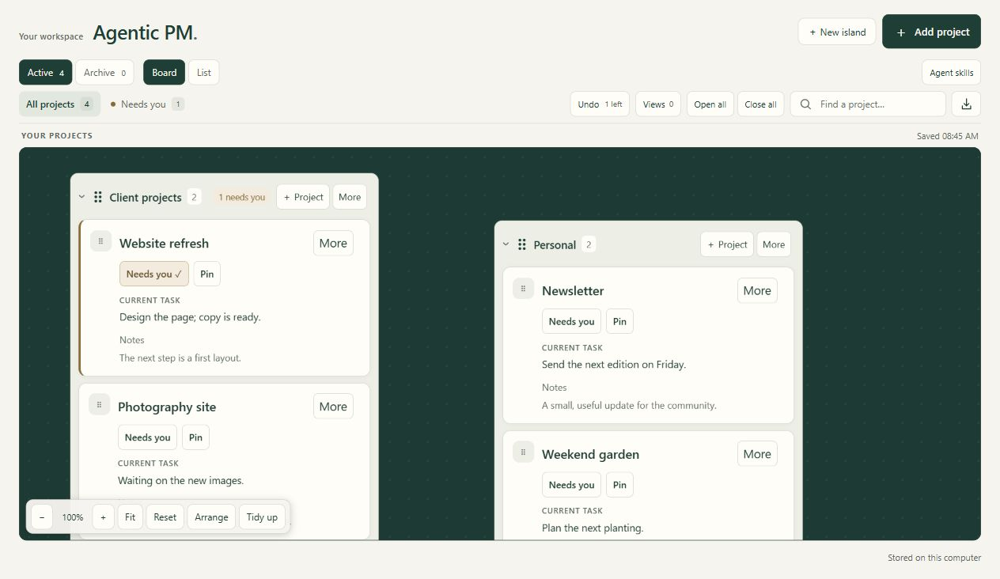

Give related work its own island.
Group projects and sub-projects, then move their islands wherever they make sense. Zoom out for the overview or focus on one island.
Personal projects. A shared view.
A personal whiteboard for your projects. Talk through a few updates with your agent when things change.
Free & open source Runs on your computer

01 / The board
Some projects belong together. Some need your attention today. Keep both in view without rearranging your whole life around a list.
Group projects and sub-projects, then move their islands wherever they make sense. Zoom out for the overview or focus on one island.
Keep a project close without moving it out of its usual home. Unpin it when you’re done.
Save a view for the work you want to see. Your filters, open islands and camera come back with it.
02 / Agent workflow
With a connected agent, review three or four projects at a time. Type a brain dump or use your agent’s dictation. Skip anything that hasn’t changed.
Use the local MCP connector with a compatible client, such as Codex or Claude Code.
The Board update skill shows your current tasks and asks about a small batch. Answer in any order.
Your agent saves the updates while preserving existing notes. Newer edits are checked before a change is applied.
Website refresh → current task
Design the page; copy is ready.
2 updated · 2 unchanged
Result: two projects updated. Two left unchanged.
The example uses sample projects. Voice input comes from your agent client.
03 / Local setup
Agentic PM runs on your computer. Start with an empty board and make it your own. The source is MIT-licensed, with no app account or hosted subscription.
Setup guide on GitHubScroll sideways to read each command →
git clone https://github.com/GoliathMarketing89/agentic-pm.git
cd agentic-pm/project-list
node server.mjs04 / Questions
Node.js 24 or newer and a modern browser. The Windows launcher is included. Connect a compatible MCP agent when you want help filling out the board.
Yes. Create projects, edit tasks and notes, and arrange the board manually. Agent skills add a conversational way to maintain it.
The application is free and MIT-licensed. Your chosen agent client or model provider may have its own charges.
On your computer in a local SQLite database. Browser preferences stay in your browser. A connected agent handles model requests under its own settings; the board itself is not a hosted AI service.
Not automatically. Export a JSON backup and import it on another computer. Import replaces the destination board rather than merging the two.
Archived projects can be restored at any time. Deleted projects have a separate seven-day recovery window. The board also keeps up to ten eligible shared actions available to undo.
A little more room to think
Start with your next project. Bring your agent when you’re ready.
Get Agentic PM on GitHubFree & open source · MIT license